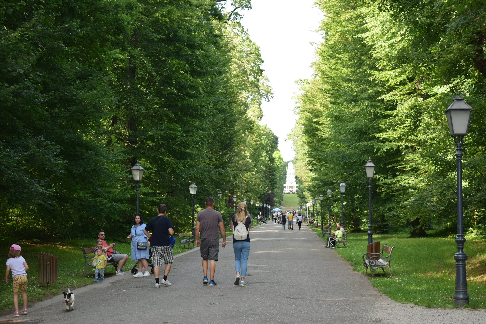
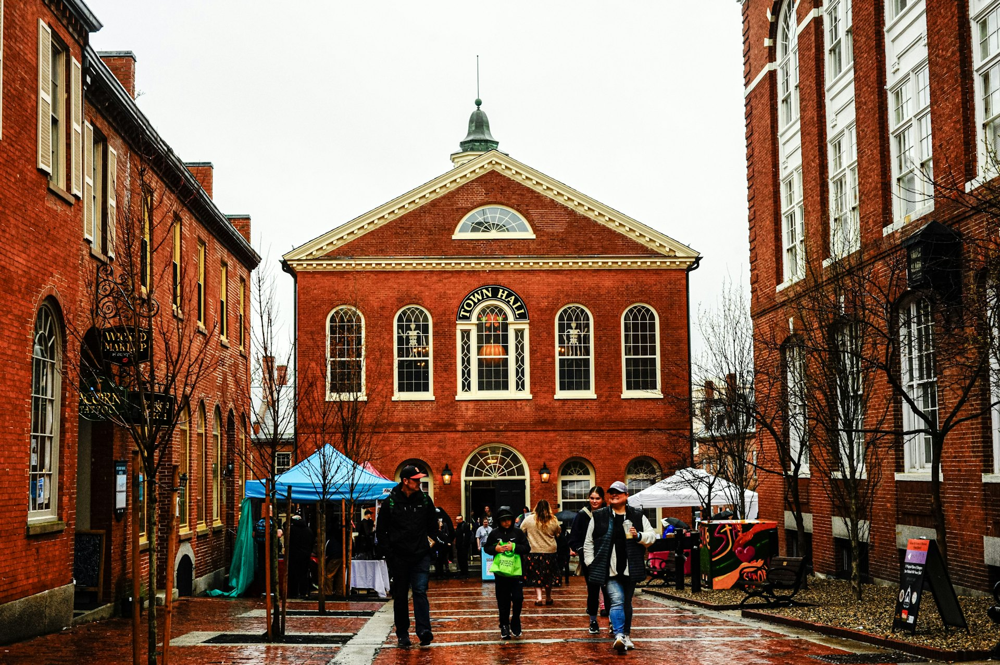

Sectors
Six fields where leadership outlives the leader.
Formidable is an executive search and talent consultancy operating in these sectors. Each one builds something a community will depend on for decades.

Built Environment & Urban Development
Parks, waterfronts, housing, and the places where public life actually happens.
Explore sector
Manufacturing & Industrials
Rebuilding the capacity to make things, at home and at scale.
Explore sector
Climate & Resilience
The companies and coalitions helping communities adapt, decarbonize, and endure.
Explore sector
Democracy Reform & Policy Innovation
Organizations working to make self-government work better for everyone.
Explore sector
Cozytech
Technology built to bring people closer, not to keep them scrolling.
Explore sector
Ecology & Conservation
Protecting and restoring the living systems everything else depends on.
Explore sectorWhy these six
The common thread.
A park, a factory, a power grid, an election system, a community, a watershed. Each one is infrastructure in the broadest sense: something people rely on without thinking about it, and something that fails slowly and expensively when it is led badly.
The sectors also share a talent problem. The best leaders in them are often driven by purpose and not actively looking. Reaching them takes a search built on what they care about, which is what the Legacy, Mastery, Freedom approach is for.
Building something meant to outlast you?
Tell us about the role, the team, or the organization you are trying to build. Every conversation starts with what you want the work to leave behind.